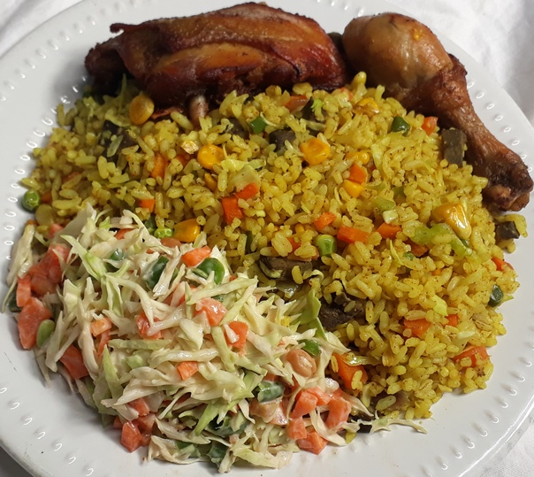

Fried Rice and Chicken

Description
Nigerian fried rice is a rice dish that’s made with meats, mixed veggies (carrots, peas,
sweet corn, green beans) and spices. It is a common feature in parties.
Ingredients
- 2 cups long grain white rice
- 2 large green peppers
- 1 small cabbage
- 1 large onion
- ½ cup green beans
- 4 large carrots
- 2 cups chicken stock
- ½ tbsp. white pepper
- 3 cooking spoons groundnut oil
- 4 large chicken thighs (or other meat of choice)
- 1 tsp. curry powder
- Seasoning and salt to taste
Steps
- Wash and spice the chicken pieces. Boil until tender, then fry or grill them.
- Chop the carrot, cabbage, green pepper and green beans.
- Parboil the rice, then cook in the chicken stock (add 2 extra cups of water).
Cook until almost tender, then set aside.
- Put a clean frying pan on fire. Add groundnut oil and onion to the pan. Stir for
a minute then add the carrot and green beans. Stir for another minute.
- Add the cabbage, green pepper, white pepper, curry, seasoning and salt to taste
(try to keep it a bit spicy). Stir-fry for 2 minutes.
- Add the rice to the mix, stir and simmer for 5 minutes. Serve with the chicken.